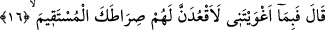
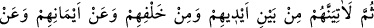
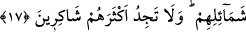

İblis ile konuşmuştur. Çünkü Allah’ın biriyle konuşması, muhatabı hakkında rahmet,
hoşnudluk, ikram, ve kadrini yüceltmek anlamına gelir. Bilmez misin ki, Musa (a.s.) bu
özelliği ile Halilullah İbrahim (a.s.) ve Efendimiz Muhammed (s.a.v.) dışındaki
peygamberlerden üstün olmuştur.
Eğer “Allah’ın birisini bir işle vazifelendirmesi, onun için onur kaynağıdır. Halbuki
İblis hakkında bu görevlendirme, bir şereflendirilmeye vesile olmamıştır. Keza Allah’ın
kelâmını göndermesi başkaları için bir övünç kaynağı olduğu halde, aynı durum İblis
için söz konusu değildir. Bu nasıl izah edilir?” denirse, şöyle cevap verilir:
Sadece vazifelendirmek, gönderilmiş olmak, başlıbaşına bir onur kaynağı değildir. Bu
ancak bir delili ortaya koymak için olur. Nitekim Allah, Musa (a.s.)’ı, Firavun ve
Hâmân’a göndermiştir. Onların Allah’ın düşmanları olduğunu bildiği halde onlara Mûsâ
(a.s.)’ı göndererek onlara ikram etmeyi ve onları yüceltmeyi kastetmemiştir. Musa
(a.s.)’a hitâbı ise onu şereflendirmek içindir.
“(Allah) onlara seslenerek: “elçilere ne cevap verdiniz?” dediği gün.” (el-Kasas,
68/65) ayetinde belirtilen Allah Teâlâ’nın seslenmesi de melekleri vasıtasıyle olacaktır.
16. İblis dedi ki: Öyle ise beni azdırmana karşılık, and içerim ki, ben de onları
saptırmak için senin doğru yolunun üstüne oturacağım.
İblis “dedi ki: “Öyle ise beni azdırmânâ karşılık.” “iğva” (azdırmak), doğru yoldan
saptırmak anlamındadır. Yani, beni azgın, yoldan çıkmış, rahmetten mahrum bir hâle
getirdiğin için “and içerim ki,” Senin izzetin hakkı için yemin ederim ki, “ben de onlar
(ı saptırmak) için senin doğru yolunun üstüne oturacağım.” Âdem (a.s.)’ın ve
zürriyetinin yoluna oturup onları hep gözetleyeceğim. Yol kesicilerin, yolcuların yolunu
kesmek için yaptığı gibi önlerine dikileceğim. Yani, cennete ulaştıran yolda insanların
önüne geçeceğim. Bu yol, İslâm dinidir.
Ayetteki “oturmak” ifadesi, Âdemoğullarını aldatmaya çalışmak, bu yönde çeşitli
planlar kurmaktan kinayedir. Bir işi tamamlamak için kendini helak edercesine gayret
gösteren kimse, maksadına ermek için kendini meşgul eden şeyleri gönlünden çıkarmak
ve maksadına tüm varlığı ile yönelmek için oturur.
17. “Sonra elbette onlara önlerinden, arkalarından, sağlarından, sollarından